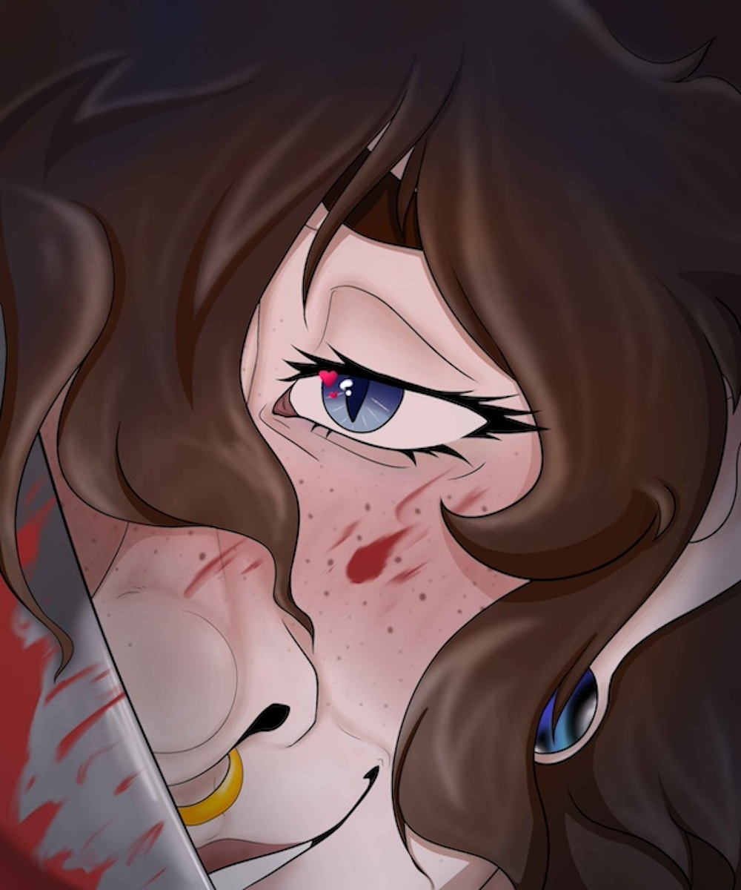

Intro
Ethan
Raiden
Ethan Shade
Welcome to Ethan's Page
- Full Name: Ethan Ren Shade
- Age: 34
- Birthday: October 31st (Scorpio)
- Height: 5'6"
- Species: A mutt of werewolf and demon.
Brief Description of Looks:
- Eyes: Icey blue-grey
-
Hair: Auburn in color with slightly lighter ends. Wavy/Curly and
comes down around his shoulders.
-
Build: Thin but slightly toned; lesser athletic, thicker thighs.
- Skin: Pale
- Extras:
-
Piercings: Septum, Medium gauges, miscellaneous ear piercings
-
Scars: Old scratch mark across cheek from his sister,
miscellaneous self-harm and fighting scars
-
Wolf Form: Patterned like a grey wolf, though his fur would
essentially be the same color as his hair
Backstory:
Ethan grew up in what you would call a "broken home". His mother died when
he was very young, leaving him and his elder sister alone with their
abusive father. He had children very young- getting his first love
pregnant when they were seniors in highschool. The year after, a close
friend of theirs offered to be a surrogate for them and his second child
was born. Unfortunately, shortly after that, Ethan's lover passed away. He
was left with two children and being a single father at the ripe age of
19.
